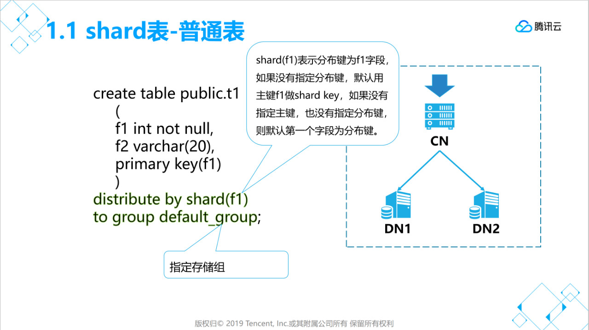
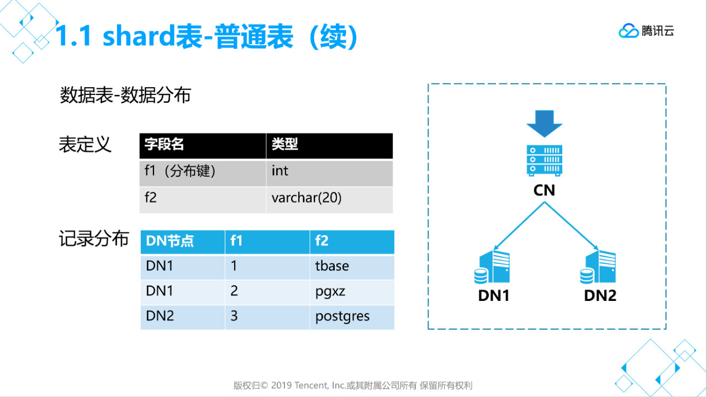
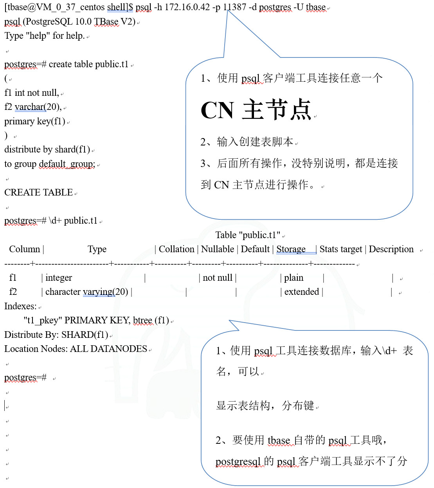
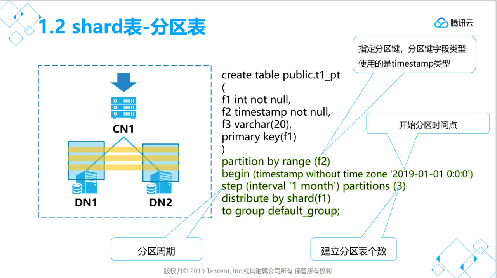
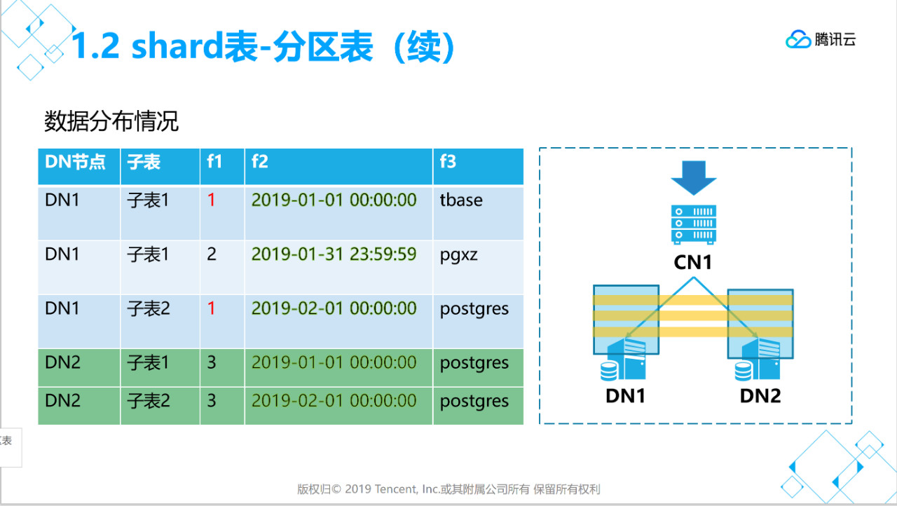
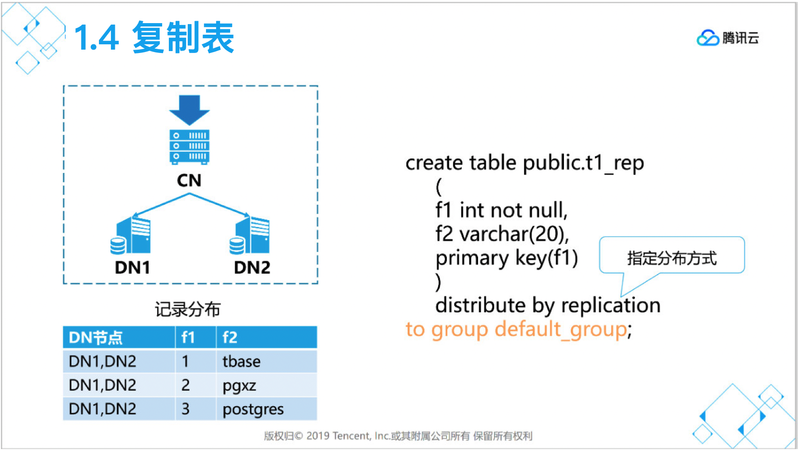

基本使用
在快速入门文章中我们介绍了 OpenTenBase 的架构、源码编译安装、集群运行状态、启动停止等内容。
在应用接入中我们介绍了应用程序连接 OpenTenBase 数据库进行建库、建表、数据导入、查询等操作。
本篇将介绍OpenTenBase中特有的shard表、复制表的创建，和基本的DML操作。
1、创建数据表
1.1、创建shard普通表（分片表）
   说明：
- distribute by shard(x) 用于指定分布键，数据分布于那个节点就是根据这个字段值来计算分片。
- to group xxx 用于指定存储组（每个存储组可以有多个节点）。
- 分布键字段值不能修改，字段长度不能修改，字段类型不能修改。
分布式数据库中，分片表是使用最多的表类型，合理的分片键设置将会系统的性能提升很多倍，不合理的分片键也会导致SQL性能恶化严重，因此分片键的优化是分布式SQL优化的重点中的重点： 分片键选择准则： * 准则1：高频类SQL的业务字段，避免SQL产生分布式事务，避免跨DN节点数据插入、更新、删除（SQL能带上分片键）。 * 准则2：分析类SQL的关联字段，尽量避免SQL产生批量跨DN节点数据交互（关联字段为分片键）。 * 准则3：尽量避免DN节点数据不均衡。 准则1、2和准则3可能有冲突，选择时准则1高于准则2、3
数据库在迁移时，会使用默认的规则指定分片键，大部分情况下是最优的，但仍有部分情景需要调整，下面是默认原则： 1）有主键，则选择主键做分片键。如果主键是复合字段组合，则选择第一个字段做分片键。 2）有唯一索引，则选择唯一索引列做分片键。如果唯一索引是复合字段组合，则选择第一个字段做分片键。 3）使用第一个字段做分片键。
一般会有两个阶段调整表类型和分片键： 阶段一：迁移之前，针对TOP 20的大表或者常用表确定表的类型和分片键，在迁移完表结构后，进行调整，之后再导入数据。 阶段二：在适配测试、性能测试阶段，针对有性能问题的业务再进行调优。
1.2、创建shard普通分区表（分片表+分区）
 
[opentenbase@VM_0_37_centos shell]$ psql -h 172.16.0.42 -p 11387 -d postgres -U opentenbase
psql (PostgreSQL 10.0 opentenbase V2)
Type "help" for help.
postgres=# create table public.t1_pt
(
f1 int not null,
f2 timestamp not null,
f3 varchar(20),
primary key(f1)
)
partition by range (f2)
begin (timestamp without time zone '2019-01-01 0:0:0')
step (interval '1 month') partitions (3)
distribute by shard(f1)
to group default_group;
CREATE TABLE
postgres=#
postgres=# \d+ public.t1_pt
Table "public.t1_pt"
Column | Type | Collation | Nullable | Default | Storage | Stats target | Description
--------+-----------------------------+-----------+----------+---------+----------+--------------+-------------
f1 | integer | | not null | | plain | |
f2 | timestamp without time zone | | not null | | plain | |
f3 | character varying(20) | | | | extended | |
Indexes:
"t1_pt_pkey" PRIMARY KEY, btree (f1)
Distribute By: SHARD(f1)
Location Nodes: ALL DATANODES
Partition By: RANGE(f2)
# Of Partitions: 3
Start With: 2019-01-01
Interval Of Partition: 1 MONTH
postgres=#
说明：
- partition by range (x) 用于指定分区键，支持timesamp,int类型，数据分布于那个子表就是根据这个字段值来计算分区。
- begin( xxx )指定开始分区的时间点。
- step(xxx)指定分区有周期
- partions(xx)初始化时建立分区子表个数。
- 增加分区子表的方法ALTER TABLE public.t1_pt ADD PARTITIONS 2;
1.3、创建复制表

[opentenbase@VM_0_37_centos shell]$ psql -h 172.16.0.42 -p 11387 -d postgres -U opentenbase
psql (PostgreSQL 10.0 opentenbase V2)
Type "help" for help.
postgres=# create table public.t1_rep
(
f1 int not null,
f2 varchar(20),
primary key(f1)
)
distribute by replication ;
to group default_group;
CREATE TABLE
说明：
- 经常要跨库JOIN的小数据量表可以考虑使用复制表。
- 复制表是所有节点都有全量数据，对于大数据量的数据表不适合。
- 复制表更新性能较低。
1.4、创建单表
单表即表只存在于某一个DN节点，目前还不支持指定任意DN节点进行单表创建。可以通过多group的能力迂回实现：先添加一个DN节点，然后将该节点创建为一个独立的group中，可以命名为single_group。然后创建表时，指定表的group为刚刚创建的single_group。（注意：不能使用default_group中的节点，创建group的时候也会失败的）
[opentenbase@VM_0_37_centos shell]$ psql -h 172.16.0.42 -p 11387 -d postgres -U opentenbase
psql (PostgreSQL 10.0 opentenbase V2)
Type "help" for help.
postgres=# create table public.t1_signal
(
f1 int not null,
f2 varchar(20),
primary key(f1)
)
distribute by replication ;
to group single_group;
CREATE TABLE
1.5、几种表的适用场景简述
上述几种表类型有各自的使用场景，合理的使用表类型，对SQL的性能会带来很大的提升：
| 分布式表类型 | 描述 | 适用场景 | 使用约束 |
|---|---|---|---|
| 分片表 | 表记录按分片键值进行hash打散到所有分片中，每个分片都只有一部分数据。 | 数据量特别大，并且查询、删除、修改该表的数据时可以指定分片键作为操作条件，大多数语句不涉及跨库分布式事务访问。 | 查询、更新、删除数据时需要指定分片键；分片键字段类型、长度不能修改，分片键值不能直接更新；目前不能基于非分片键字段创建主键或者唯一索引。 |
| 复制表 | 所有分片中都存储一份相同的全量数据。 | 经常要使用非分片键字段JOIN并且更新频率较低的小表推荐使用复制表。 | 该表并发更新低、数据量少，不需要同步该表的数据到Kafka。 |
| 单表 | 存储在一个专门定义的group中，这个group中只有一个分片。 | 查询、删除、修改该表的数据时无法利用分片键，更新频繁，但数据量不是特别大。 | 更新频繁，数据量不是特别大，不需要与其它分片表或者复制表进行JOIN操作。 |
2、DML相关操作
2.1、INSERT
- 插入多条记录
CREATE TABLE public.t1_insert_mul
(
f1 int not null,
f2 varchar(20),
primary key(f1)
) distribute by shard(f1) to group default_group;
postgres=# INSERT INTO t1_insert_mul VALUES(1,'opentenbase'),(2,'pg');
INSERT 0 2
- 插入更新
create table public.t1_conflict
(
f1 int not null,
f2 varchar(20),
primary key(f1)
) distribute by shard(f1) to group default_group;
insert into t1_conflict values(1,'opentenbase') ON CONFLICT (f1) DO UPDATE SET f2 = 'opentenbase';
create table public.t1_conflict
(
f1 int not null,
f2 varchar(20) not null,
f3 int ,
primary key(f1,f2)
) distribute by shard(f1) to group default_group;
insert into t1_conflict values(1,'opentenbase',2) ON CONFLICT (f1,f2) DO UPDATE SET f3 = 2;
- 插入返回
create table public.t1_insert_return
(
f1 int not null,
f2 varchar(20) not null default 'opentenbase',
primary key(f1)
) distribute by shard(f1) to group default_group;
postgres=# insert into t1_insert_return values(1) returning *;
f1 | f2
----+-------
1 | opentenbase
(1 row)
INSERT 0 1
- INSERT更多的使用方法请参考Postgresql用法
http://www.postgres.cn/docs/10/sql-insert.html
2.2、UPDATE
- 基于分布键条件更新
create table public.t1_update_pkey
(
f1 int not null,
f2 varchar(20) not null default 'opentenbase',
f3 varchar(32),
primary key(f1)
) distribute by shard(f1) to group default_group;
postgres=# explain UPDATE t1_update_pkey SET f2='opentenbase' where f1=1;
QUERY PLAN
----------------------------------------------------------------------------------
Remote Fast Query Execution (cost=0.00..0.00 rows=0 width=0)
Node/s: dn001
-> Update on t1_update_pkey (cost=0.15..4.17 rows=1 width=154)
-> Index Scan using t1_update_pkey_pkey on t1_update_pkey (cost=0.15..4.17 rows=1 width=154)
Index Cond: (f1 = 1)
性能最优，扩展性好
- 非分布键更新
postgres=# explain UPDATE t1_update_pkey SET f2='opentenbase' where f3='pg'; QUERY PLAN
----------------------------------------------------------------------------------
Remote Fast Query Execution (cost=0.00..0.00 rows=0 width=0)
Node/s: dn001, dn002
-> Update on t1_update_pkey (cost=0.00..15.12 rows=2 width=154)
-> Seq Scan on t1_update_pkey (cost=0.00..15.12 rows=2 width=154)
Filter: ((f3)::text = 'pg'::text)
(5 rows)
更新语句发往所有节点
- 分区表带分区条件更新
create table public.t1_pt_update
( f1 int not null,f2 timestamp not null,f3 varchar(20),primary key(f1) )
partition by range (f2) begin (timestamp without time zone '2019-01-01 0:0:0') step (interval '1 month') partitions (2) distribute by shard(f1) to group default_group;
postgres=# explain update t1_pt_update set f3='opentenbase' where f1=1 and f2>'2019-01-01' and f2<'2019-02-01'; QUERY PLAN
-----------------------------------------------------------------------------------
Remote Fast Query Execution (cost=0.00..0.00 rows=0 width=0)
Node/s: dn001
-> Update on t1_pt_update_part_0 (cost=0.15..4.17 rows=1 width=80)
-> Index Scan using t1_pt_update_pkey_part_0 on t1_pt_update_part_0 (cost=0.15..4.17 rows=1 width=80)
Index Cond: (f1 = 1)
Filter: ((f2 > '2019-01-01 00:00:00'::timestamp without time zone) AND (f2 < '2019-02-01 00:00:00'::timestamp without time zone))
带分区条件更新，性能最优，扩展性好
- 分区表不带分区条件更新
postgres=# explain update t1_pt_update set f3='opentenbase' where f1=1; QUERY PLAN
------------------------------------------------------------------------------------
Remote Fast Query Execution (cost=0.00..0.00 rows=0 width=0)
Node/s: dn001
-> Update on t1_pt_update (cost=0.15..4.17 rows=1 width=80)
-> Index Scan using t1_pt_update_pkey_part_0 on t1_pt_update (partition sequence: 0, name: t1_pt_update_part_0) (cost=0.15..2.08 rows=0 width=80)
Index Cond: (f1 = 1)
-> Index Scan using t1_pt_update_pkey_part_1 on t1_pt_update (partition sequence: 1, name: t1_pt_update_part_1) (cost=0.15..2.08 rows=0 width=80)
Index Cond: (f1 = 1)
(7 rows)
需要扫描所有分区子表
- 关联表更新
create table public.t1_update_join1
(
f1 int not null,f2 varchar(20) not null default 'opentenbase',primary key(f1)
)
distribute by shard(f1) to group default_group;
create table public.t1_update_join2
(
f1 int not null,f2 varchar(20) not null default 'opentenbase',primary key(f1)
)
distribute by shard(f1) to group default_group;
update t1_update_join1 set f2='pg' from t1_update_join2 where t1_update_join1.f1=t1_update_join2.f1;
表关联更新只能是基于分布键关联
- 分布键，分区键不能更新
create table public.t1_update_pkey
(
f1 int not null,f2 varchar(20) not null default 'opentenbase', primary key(f1)
) distribute by shard(f1) to group default_group;
postgres=# update t1_update_pkey set f1=2 where f1=1;
ERROR: Distributed column or partition column "f1" can't be updated in current version
Time: 0.910 ms.
目前的解决办法“删除旧记录，再新增记录”
- 更多的UPDATE使用方法请参考Postgresql用法
http://www.postgres.cn/docs/10/sql-update.html
2.3、DELETE
- 删除返回记录
create table public.t1_delete_return
(
f1 int not null,f2 varchar(20) not null default 'opentenbase',primary key(f1)
)
distribute by shard(f1) to group default_group;
postgres=# insert into t1_delete_return values(1,'opentenbase');
INSERT 0 1
postgres=# delete from t1_delete_return where f1=1 returning *;
f1 | f2
----+-------
1 | opentenbase
(1 row)
-
UPDATE最优使用方法同样适合于DELETE
-
DELETE更多的使用方法见
http://www.postgres.cn/docs/10/sql-delete.html
2.4、SELECT
- 基于分布键查询
create table public.t1_select
(
f1 int not null,f2 varchar(20) not null default 'opentenbase',f3 varchar(32), primary key(f1)
)
distribute by shard(f1) to group default_group;
postgres=# explain select * from t1_select where f1=1; QUERY PLAN
----------------------------------------------------------------------------------
Remote Fast Query Execution (cost=0.00..0.00 rows=0 width=0)
Node/s: dn001
-> Index Scan using t1_select_pkey on t1_select (cost=0.15..4.17 rows=1 width=144)
Index Cond: (f1 = 1)
性能最优，扩展性好
- 非分布键查询
postgres=# explain select * from t1_select where f1<3;
QUERY PLAN
-------------------------------------------------------------------------------------
Remote Fast Query Execution (cost=0.00..0.00 rows=0 width=0)
Node/s: dn001, dn002
-> Bitmap Heap Scan on t1_select (cost=3.21..14.92 rows=137 width=144)
Recheck Cond: (f1 < 3)
-> Bitmap Index Scan on t1_select_pkey (cost=0.00..3.17 rows=137 width=0)
Index Cond: (f1 < 3)
查询语句发往所有节点，然后在CN汇总
- 分布键JOIN查询
create table public.t1_select_join1
( f1 int not null,f2 int,primary key(f1) )
distribute by shard(f1) to group default_group;
create index t1_select_join1_f2_idx on t1_select_join1(f2);
create table public.t1_select_join2
( f1 int not null,f2 int,primary key(f1) )
distribute by shard(f1) to group default_group;
create index t1_select_join2_f2_idx on t1_select_join2(f2);
postgres=# explain select t1_select_join1.* from t1_select_join1,t1_select_join2 where t1_select_join1.f1=t1_select_join2.f1 and t1_select_join1.f1=1;
QUERY PLAN --------------------------------------------------------------------------------------
Remote Fast Query Execution (cost=0.00..0.00 rows=0 width=0)
Node/s: dn001
-> Nested Loop (cost=0.30..8.35 rows=1 width=8)
-> Index Scan using t1_select_join1_pkey on t1_select_join1 (cost=0.15..4.17 rows=1 width=8)
Index Cond: (f1 = 1)
-> Index Only Scan using t1_select_join2_pkey on t1_select_join2 (cost=0.15..4.17 rows=1 width=4)
Index Cond: (f1 = 1)
性能最优，扩展性好
- 非分布键JOIN查询
postgres=# explain select * from t1_select_join1,t1_select_join2 where t1_select_join1.f1=t1_select_join2.f2 and t1_select_join1.f2=1 ;
QUERY PLAN ------------------------------------------------------------------------------------------
Remote Subquery Scan on all (dn001,dn002) (cost=2.26..33.48 rows=7 width=16)
-> Nested Loop (cost=2.26..33.48 rows=7 width=16)
-> Bitmap Heap Scan on t1_select_join1 (cost=2.13..9.57 rows=7 width=8) Recheck Cond: (f2 = 1)
-> Bitmap Index Scan on t1_select_join1_f2_idx (cost=0.00..2.13 rows=7 width=0)
Index Cond: (f2 = 1)
-> Materialize (cost=100.12..103.45 rows=7 width=8)
-> Remote Subquery Scan on all (dn001,dn002) (cost=100.12..103.44 rows=7 width=8)
Distribute results by S: f2
-> Index Scan using t1_select_join2_f2_idx on t1_select_join2 (cost=0.12..3.35 rows=7 width=8)
Index Cond: (f2 = t1_select_join1.f1)
需要在DN做数据重分布
2.5、TRUNCATE
- 普通表truncate
create table public.t1_delete_truncate
( f1 int not null,f2 varchar(20) not null default 'opentenbase',primary key(f1) )
distribute by shard(f1) to group default_group;
insert into t1_delete_truncate select t,t::text from generate_series(1,1000000) as t;
truncate table t1_delete_truncate;
- 分区表truncate
postgres=# create table public.t1_pt
(
f1 int not null,
f2 timestamp not null,
f3 varchar(20),
primary key(f1)
)
partition by range (f2)
begin (timestamp without time zone '2019-01-01 0:0:0')
step (interval '1 month') partitions (3)
distribute by shard(f1)
to group default_group;
truncate public.t1_pt partition for ('2019-01-01' ::timestamp without time zone);